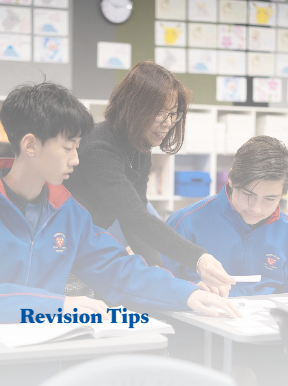
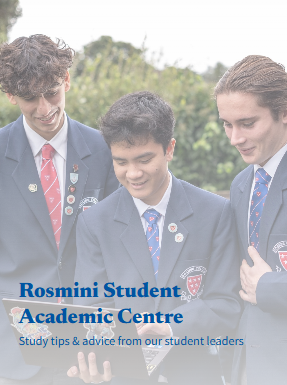

To gain University Entrance through NCEA, students need 10 numeracy credits (Level 1+), 10 literacy credits (Level 2+, split between reading and writing), 14 credits in three approved Level 3 subjects, and NCEA Level 3. Certificate Endorsement is awarded for 50 credits at Excellence or Merit. Course Endorsement requires 14 credits in one subject in a year, with at least 3 internal and 3 external credits (except for PE, Religious Studies, and Level 3 Visual Arts). Endorsements reflect high achievement and appear on the Record of Achievement.
Students in Years 9–13 must bring a personal computing device for educational use, chosen by parents with learning needs in mind and meeting minimum specs. Rosmini College's E-Learning programme aims to enhance learning through digital tools, preparing students for a connected, collaborative world. The goal is to build digital confidence, curiosity, and active engagement in learning. Technology is used to support education, not replace it, and won’t be used all day. The focus is on safe, purposeful, and balanced tech use in the classroom.

Students in Years 9–13 at Rosmini College must bring a personal device for learning, chosen by parents and meeting minimum specifications. The E-Learning programme aims to enhance education through digital tools that engage and support academic growth. It prepares students to be confident, curious, and collaborative users of technology for the modern world. The programme emphasizes safe, balanced use of technology, only when it genuinely enhances learning. Technology supports education but is not used all day, every day.

The purpose of this website is to serve as a valuable resource for Rosmini College students, helping them prepare effectively for their end-of-year external examinations. We consulted with numerous Year 12 and Year 13 students to gather insights on the websites, tools, and study methods that have worked best for them during their revision. Based on their feedback, we’ve compiled a selection of the most useful resources, websites, and techniques to support your study efforts. Everything included on this site is designed to enhance your preparation and help you achieve success in your exams.